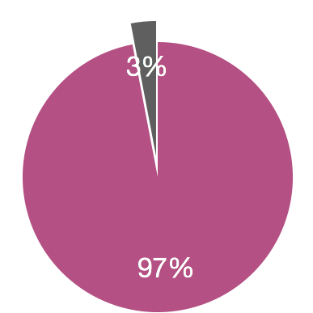
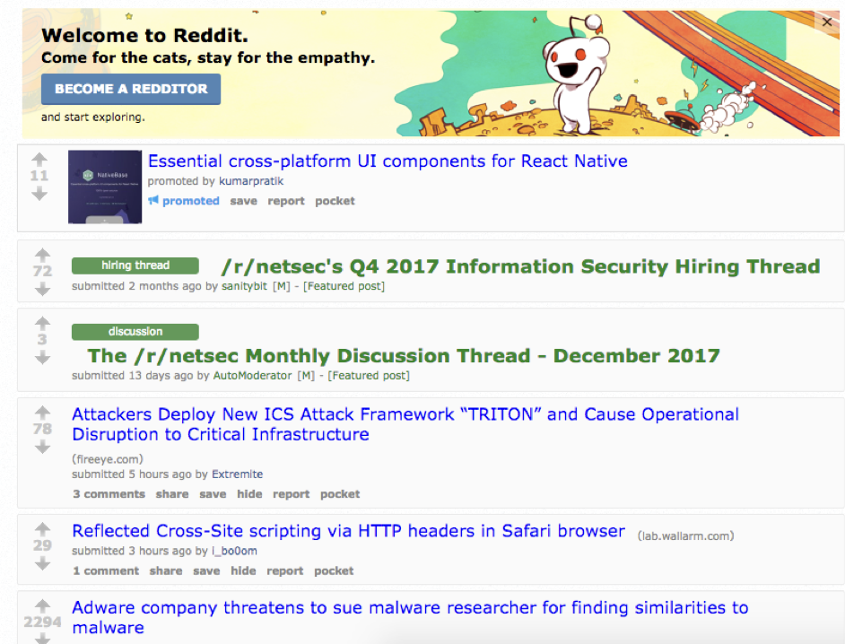
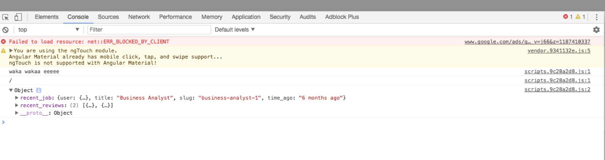
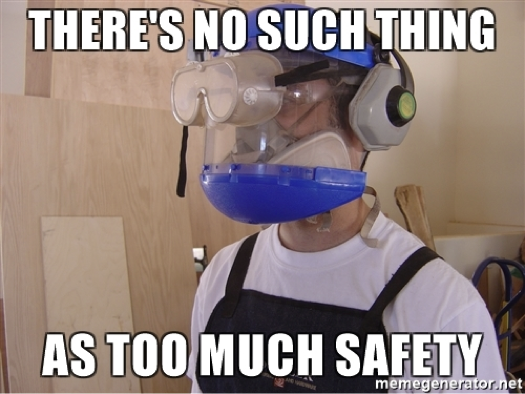
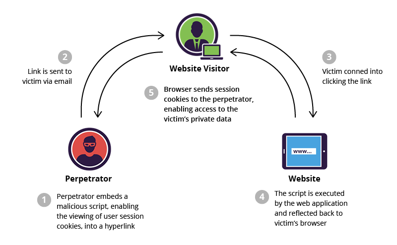
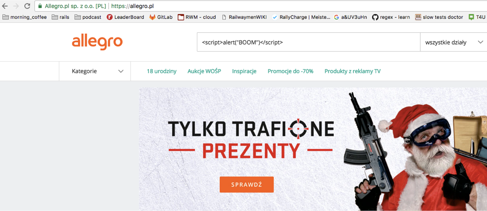
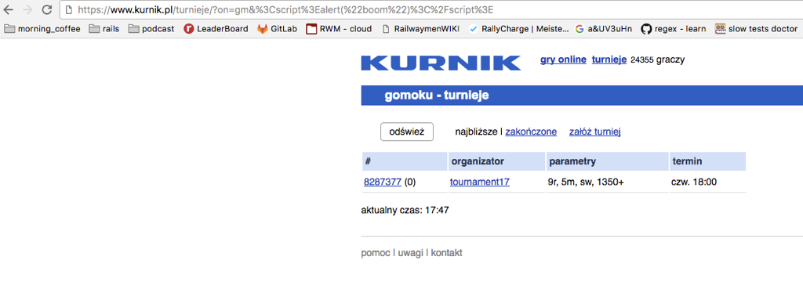
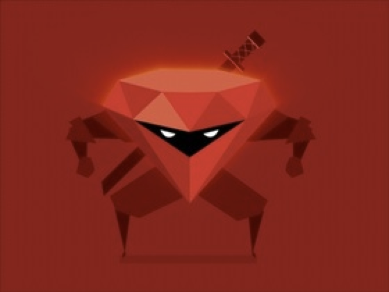
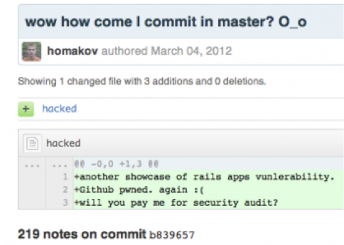
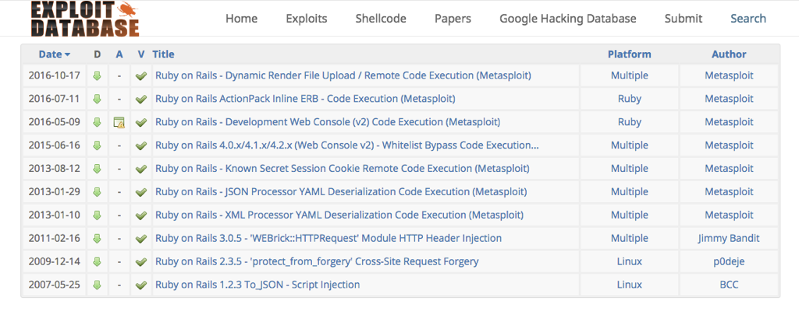

hint: vulnerability != leak
Karol Kamiński

97% of web applications are vulnerable to attacks
Carnegie Mellon University’s CyLab research has shown that 1k lines of code contain an average of 30 bugs.
hint: vulnerability != leak
Mr. Robot: The world is a dangerous place, not because of those who do evil but because of those who look on and do nothing.
OWASP: open web application security project

Sensitive Data Exposure

Cross-Site Request Forgery (CSRF)
http://server/admin/users/1?operation=change_pass&new_pass=test123
Cross-Site Request Forgery (CSRF) - remedy

Cross-Site Scripting (XSS)
Executing some code (especially JavaScript) without any knowledge of the victim

Cross-Site Scripting (XSS) - threats
Cross-Site Scripting (XSS) - types


Cross-Site Scripting (XSS) - you tricky bastard!
<script>alert(‘BOOM')</script>
<ʇdıɹɔs/>(,ɯooq‘)ʇɹǝlɐ<ʇdıɹɔs>
[][(![]+[])[+[]]+([![]]+[][[]])[+!+[]+[+[]]]+(![]+[])[!+[]+!+[]]+(!![]+[])[+[]]+(!![]+[])[!+[]+!+[]+!+[]]+(!![]+[])[+!+[]]][([][(![]+[])[+[]]+([![]]+[][[]])[+!+[]+[+[]]]+(![]+[])[!+[]+!+[]]+(!![]+[])[+[]]+(!![]+[])[!+[]+!+[]+!+[]]+(!![]+[])[+!+[]]]+[])[!+[]+!+[]+!+[]]+(!![]+[][(![]+[])[+[]]+([![]]+[][[]])[+!+[]+[+[]]]+(![]+[])[!+[]+!+[]]+(!![]+[])[+[]]+(!![]+[])[!+[]+!+[]+!+[]]+(!![]+[])[+!+[]]])[+!+[]+[+[]]]+([] …
%26%238238;%3Cscript%3Ealert(%27BOOM%27)%3C/script%3E

Using web framework makes me bulletproof!
… except … it’s not ;(
Mass assignment exploit
update_attributes(params[:foo])
allowed to make any update on any global variable


TOOLS

F. Nietzsche: If you gaze long into an abyss, the abyss also gazes into you.